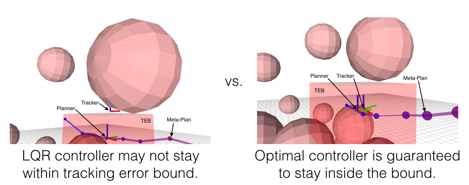

The following is a brief summary of what I've been up to in grad school. In most cases, code is available on github, and links are provided.
Efficient Iterative Linear-Quadratic Approximationsfor Nonlinear Multi-Player General-Sum Differential Games
Many problems in robotics involve multiple decision making agents. To operate efficiently in such settings, a robot must reason about the impact of its decisions on the behavior of other agents. Differential games offer an expressive theoretical framework for formulating these types of multi-agent problems. Unfortunately, most numerical so- lution techniques scale poorly with state dimension and are rarely used in real-time applications. For this reason, it is common to predict the future decisions of other agents and solve the resulting decoupled, i.e., single-agent, optimal control problem. This decoupling neglects the underlying interactive nature of the problem; however, efficient solution techniques do exist for broad classes of optimal control problems. We take inspiration from one such technique, the iterative linear-quadratic regulator (ILQR), which solves repeated approximations with linear dynamics and quadratic costs. Similarly, our proposed algorithm solves repeated linear-quadratic games. We experimentally benchmark our algorithm in several examples with a variety of initial conditions and show that the resulting strategies exhibit complex interactive behavior. Our results indicate that our algorithm converges reliably and runs in real- time. In a three-player, 14-state simulated intersection problem, our algorithm initially converges in <0.25s. Receding horizon invocations converge in <50 ms in a hardware collision-avoidance test.
This work was recently accepted to ICRA 2020. A preprint is available here and on arXiv. Code is available here. Recently, we have also extended this algorithm to games with feedback linearizable dynamics. Here, we are able to exploit the linearized structure to improve both convergence reliability and runtime. A preprint is available here, and the paper is also at ICRA 2020.
Feedback Linearization for Unknown Systems via Reinforcement Learning
We present a novel approach to control design for nonlinear systems, which leverages reinforcement learning techniques to learn a linearizing controller for a physical plant with unknown dynamics. Feedback linearization is a technique from nonlinear control which renders the input-output dynamics of a nonlinear plant linear under application of an appropriate feedback controller. Once a linearizing controller has been constructed, desired output trajectories for the nonlinear plant can be tracked using a variety of linear control techniques. A single learned policy then serves to track arbitrary desired reference signals provided by a higher-level planner. We present theoretical results which provide conditions under which the learning problem has a unique solution which exactly linearizes the plant. We demonstrate the performance of our approach on two simulated problems and a physical robotic platform. For the simulated environments, we observe that the learned feedback linearizing policies can achieve arbitrary tracking of reference trajectories for a fully actuated double pendulum and a 14 dimensional quadrotor. In hardware, we demonstrate that our approach significantly improves tracking performance on a 7-DOF Baxter robot after less than two hours of training.
This work was accented at ICRA 2020. A preprint is available here. An adaptive extension to this work was submitted to CDC 2020 and is available as a preprint here.
Probabilistically Safe Robot Planning with Confidence-Based Human Predictions
In order to safely operate around humans, robots can employ predictive models of human motion. Unfortunately, these models cannot capture the full complexity of human behavior and necessarily introduce simplifying assumptions. As a result, predictions may degrade whenever the observed human behavior departs from the assumed structure, which can have negative implications for safety. In this paper, we observe that how rational human actions appear under a particular model can be viewed as an indicator of that model's ability to describe the human's current motion. By reasoning about this model confidence in a real-time Bayesian framework, we show that the robot can very quickly modulate its predictions to become more uncertain when the model performs poorly. Building on recent work in provably-safe trajectory planning, we leverage these confidence-aware human motion predictions to generate assured autonomous robot motion. Our new analysis combines worst-case tracking error guarantees for the physical robot with probabilistic time-varying human predictions, yielding a quantitative, probabilistic safety certificate. We demonstrate our approach with a quadcopter navigating around a human.
This work was presented at RSS 2018 and recently published in journal form at IJRR.
A Scalable Framework For Real-Time Multi-Robot, Multi-Human Collision Avoidance
Robust motion planning is a well-studied problem in the robotics literature, yet current algorithms struggle to operate scalably and safely in the presence of other moving agents, such as humans. This paper introduces a novel framework for robot navigation that accounts for high-order system dynamics and maintains safety in the presence of external disturbances, other robots, and non-deterministic intentional agents. Our approach precomputes a tracking error margin for each robot, generates confidence-aware human motion predictions, and coordinates multiple robots with a sequential priority ordering, effectively enabling scalable safe trajectory planning and execution. We demonstrate our approach in hardware with two robots and two humans. We also showcase our work’s scalability in a larger simulation.
This work will be presented at ICRA 2019. A preprint is available here, and code is available here.
Safely Probabilistically Complete Real-Time Planning and Exploration in Unknown Environments
We present a new framework for motion planning that wraps around existing kinodynamic planners and guaran-tees recursive feasibility when operating in a priori unknown, static environments. Our approach makes strong guarantees about overall safety and collision avoidance by utilizing a robust controller derived from reachability analysis. We ensure that motion plans never exit the safe backward reachable set of the initial state, while safely exploring the space. This preserves the safety of the initial state, and guarantees that that we will eventually find the goal if it is possible to do so while exploring safely. We implement our framework in the Robot Operating System (ROS) software environment and demonstrate it in a real-time simulation.
This work will be presented at ICRA 2019. A preprint is available here, and code is available here.
A Successive-Elimination Approach to Adaptive Robotic Sensing
We study the adaptive sensing problem for the multiple source seeking problem, where a mobile robot must identify the strongest emitters in an environment with background emissions. Background signals may be highly heterogeneous, and can mislead algorithms which are based on receding horizon control, greedy heuristics, or smooth background priors. We propose AdaSearch, a general algorithm for adaptive sensing. AdaSearch combines global trajectory planning with principled confidence intervals in order to concentrate measurements in promising regions while still guaranteeing sufficient coverage of the entire area. Theoretical analysis shows that AdaSearch significantly outperforms a uniform sampling strategy when the distribution of background signals is highly variable. Simulation studies demonstrate that when applied to the problem of radioactive source-seeking, AdaSearch outperforms both uniform sampling and a receding time horizon information-maximization approach based on the current literature. We corroborate these findings with a hardware demonstration, using a small quadrotor helicopter in a motion-capture arena.
For a more detailed description, please check out our blog post.
A Classification-based Approach for Approximate Reachability
Hamilton-Jacobi (HJ) reachability analysis has been developed over the past decades into a widely-applicable tool for determining goal satisfaction and safety verification in nonlinear systems. While HJ reachability can be formulated very generally, computational complexity can be a serious impediment for many systems of practical interest. Much prior work has been devoted to computing approximate solutions to large reachability problems, yet many of these methods may only apply to very restrictive problem classes, do not generate controllers, and/or can be extremely conservative. In this paper, we present a new method for approximating the optimal controller of the HJ reachability problem for control-affine systems. While also a specific problem class, many dynamical systems of interest are, or can be well approximated, by control-affine models. We explicitly avoid storing a representation of the value function, and instead learn a controller as a sequence of simple binary classifiers. We compare our approach to existing grid-based methodologies in HJ reachability and demonstrate its utility on several examples, including a physical quadrotor navigation task.
This work will be presented at ICRA 2019. A preprint is available here.
Planning, Fast and Slow: A Framework for Adaptive Real-Time Safe Trajectory Planning
Motion planning is an extremely well-studied problem in the robotics community, yet existing work largely falls into one of two categories: computationally efficient but with few if any safety guarantees, or able to give stronger guarantees but at high computational cost. This work builds on a recent development called FaSTrack in which a slow offline computation provides a modular safety guarantee for a faster online planner. We introduce the notion of meta-planning in which a refined offline computation enables safe switching between different online planners. This provides autonomous systems with the ability to adapt motion plans to a priori unknown environments in real-time as sensor measurements detect new obstacles, and the flexibility to maneuver differently in the presence of obstacles than they would in free space, all while maintaining a strict safety guarantee. We demonstrate the meta-planning algorithm both in simulation and a hardware experiment using a small quadrotor.
This work was recently accepted to ICRA 2018. A preprint is available here, and code is available here.
Also, for a more detailed description of how this stuff works, check out my recent blog post.

A Model Predictive Control Approach to Flow Pacing for TCP
A key challenge in the management of Internet traffic is the design of algorithms that complement well-established protocols, such as the Transmission Control Protocol (TCP), and simultaneously address their limitations. The challenge becomes greater in the context of large so-called elephant flows over long paths that often transition from higher to lower bandwidth connections. At these transition points either persistent queues are formed when buffers are over-provisioned or packet loss occurs when buffers are under-provisioned; both cases lead to degraded and/or highly variable end-to-end performance. Ideally, for such scenarios, the source should learn and set a pacing rate that matches the lower bandwidth connection. In this paper, we adopt a model-based receding horizon control strategy to design a pacing control method. Each new round-trip time (RTT) measurement is first incorporated into a linear time-varying (LTV) predictive model. Subsequently, we solve a one-step look-ahead optimization problem which finds the pacing rate which optimally trades off RTT, variance in RTT, and throughput according to the most up-to-date model. We implemented our proof-of-concept control strategy on the Linux operating system alongside the existing CoDel queuing discipline (qdisc) and HTCP congestion-control algorithm. Our preliminary results indicate significant reduction in the variances of the RTT and the throughput, resulting in more predictable performance overall.
This work was presented at Allerton 2017. A preprint is available here.
Fully Decentralized Policies for Multi-Agent Systems: An Information Theoretic Approach
Learning cooperative policies for multi-agent systems is often challenged by partial observability and a lack of coordination. In some settings, the structure of a problem allows a distributed solution with limited communication with a central or subarea node or from agent to agent. Here, we consider a scenario where no communication is available, and instead we learn local policies for all agents that collectively mimic the solution to a centralized multi-agent optimization problem. We present an information theoretic framework based on rate distortion theory which facilitates analysis of how well fully decentralized policies are able to reconstruct the optimal solution. Moreover, this framework provides a natural extension that addresses which nodes an agent should communicate with to improve the performance of its individual policy.
This work was presented at NIPS 2017. An arXiv preprint is available here, and our poster is available here.
Atom Map: A Probabilistic Amorphous 3D Map Representation for Robotics and Surface Reconstruction
Atom Mapping is a flexible new map representation, designed to replace the traditional grid-based occupancy map. Traditionally, autonomous robots represent their surrounding environment as a grid of cells which are either occupied or free, modeled as independent random Bernoulli variables. This is a nice, simple representation with a lot of very nice features: it's easy to implement, fast, and supports common tasks like planning paths through free space and guiding robots toward unexplored space. Unfortunately -- though not surprisingly for anyone with a signal processing background -- grids induce a sampling on continuous space, which can introduce all kinds of artifacts.
The AtomMap idea is simple: replace a regular grid of cubes with an unstructured collection of identical, nonoverlapping spheres (which we call atoms). Going off the grid, so to speak, lets us lay down atoms as nearly tangent to observed surfaces as possible, which can dramatically improve our resolution.
AtomMap was presented at ICRA 2017. The paper is accessible here, and the code is available here.